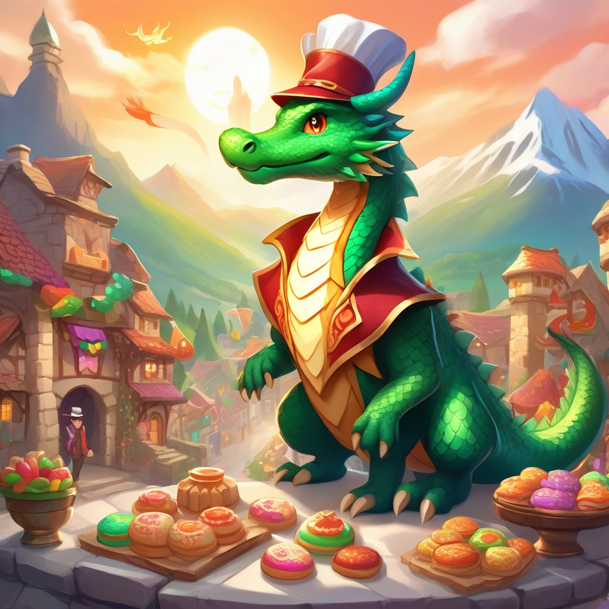

flowchart LR
A[Input: -10] --> B([Function: abs])
B --> C[Output: 10]
Web APIs for useRs
Getting data from websites, databases, and LLMs
Umair Durrani (Data Scientist at Presage Group)
A web API is like a function that exchanges data with the internet
Defintions
An API (Application Programming Interface) is a connection between computer programs.
A web API is a programmatic way to interact with a webservice that allows us to automate the retrieval of data.
Source: Wikipedia and A gRadual intRoduction to Web APIs and JSON
Example: Absolute value function
Example: Absolute value function in R
[1] 10.5Example: Absolute value with a Web API
flowchart LR
A[Input: -10] --> B([Endpoint: abs])
B --> C[Output: 10]
style B fill:#fff3e0
Example: Absolute value with Simple Math API
[1] 10The Whole Game
Step 0: Load httr2
httr2 is a comprehensive HTTP client that provides a modern, pipeable API for working with web APIs.
Step 1: Create a request
<httr2_request>
GET https://newton.now.sh/api/v2/abs/-10
Body: emptySeparate the base URL and endpoint:
An API endpoint is a URL that acts as the point of contact between an API client and an API server.
Source: What is an API endpoint?
This will be sent to the server
GET /api/v2/abs/-10 HTTP/1.1
accept: */*
accept-encoding: deflate, gzip
host: newton.now.sh
user-agent: httr2/1.2.1 r-curl/6.4.0 libcurl/8.14.1
Step 2: Perform the request
<httr2_response>
GET https://newton.vercel.app/api/v2/abs/-10
Status: 200 OK
Content-Type: application/json
Body: In memory (52 bytes)Step 3: Get the results
HTTP/1.1 200 OK
access-control-allow-headers: Origin, X-Requested-With, Content-Type, Accept
access-control-allow-origin: *
age: 0
cache-control: public, max-age=0, must-revalidate
content-type: application/json; charset=utf-8
date: Wed, 30 Jul 2025 19:28:27 GMT
etag: "34-ew5GLD/BhDbtLNRb9EMt8ij47mw"
server: Vercel
strict-transport-security: max-age=63072000; includeSubDomains; preload
x-nextjs-page: /api/v2/[operation]/[data]
x-vercel-cache: MISS
x-vercel-id: cle1::sfo1::5lrwt-1753903707320-edc1626d34fb
content-length: 52
{"operation":"abs","expression":"-10","result":"10"}
Source: MDN Web Docs
Source: API calls and HTTP Status codes
JavaScript Object Notation is a format for exchanging data
JSON:
HTTP/1.1 200 OK
access-control-allow-headers: Origin, X-Requested-With, Content-Type, Accept
access-control-allow-origin: *
age: 0
cache-control: public, max-age=0, must-revalidate
content-type: application/json; charset=utf-8
date: Wed, 30 Jul 2025 19:28:27 GMT
etag: "34-ew5GLD/BhDbtLNRb9EMt8ij47mw"
server: Vercel
strict-transport-security: max-age=63072000; includeSubDomains; preload
x-nextjs-page: /api/v2/[operation]/[data]
x-vercel-cache: MISS
x-vercel-id: cle1::sfo1::p4pgp-1753903707540-e7b810e3b4ae
content-length: 52
{"operation":"abs","expression":"-10","result":"10"}Advanced Example
An app to:
- create, illustrate, and narrate fictional stories
- store and retrieve the stories
- App
Storytelling App
Functions for story text, image, and speech generation
Functions for GETting and POSTing data to Google Cloud Firestore Database
Both packages use httr2
Generating content in the Storytelling App
library(storytelling)
create_experience <- function(user_prompt,
num_paras,
genre,
style,
narrate){
story <- generate_story(user_prompt, num_paras, genre)
title <- story$title
image_prompts <- generate_image_prompts(story$story)
all_images <- generate_images(image_prompts, style)
if (narrate){
audios <- generate_audio(story$story, model = "google")
} else {
audios <- NULL
}
list(
"story" = story$story,
"title" = title,
"images" = all_images,
"speech" = audios
)
}Request a Large Language Model (LLM) for story text
Workers AI Models at Cloudflare
Generous usage under free tier
cURL request
Base URL and endpoint
curl https://api.cloudflare.com/client/v4/accounts/$CLOUDFLARE_ACCOUNT_ID/ai/run/@cf/meta/llama-3.1-8b-instruct-fast \
-X POST \
-H "Authorization: Bearer $CLOUDFLARE_AUTH_TOKEN" \
-d '{ "messages": [{ "role": "system", "content": "You are a friendly assistant" }, { "role": "user", "content": "Why is pizza so good" }]}'cURL request
Authorization
curl https://api.cloudflare.com/client/v4/accounts/$CLOUDFLARE_ACCOUNT_ID/ai/run/@cf/meta/llama-3.1-8b-instruct-fast \
-X POST \
-H "Authorization: Bearer $CLOUDFLARE_AUTH_TOKEN" \
-d '{ "messages": [{ "role": "system", "content": "You are a friendly assistant" }, { "role": "user", "content": "Why is pizza so good" }]}'cURL request
Request type (POST) and body
curl https://api.cloudflare.com/client/v4/accounts/$CLOUDFLARE_ACCOUNT_ID/ai/run/@cf/meta/llama-3.1-8b-instruct-fast \
-X POST \
-H "Authorization: Bearer $CLOUDFLARE_AUTH_TOKEN" \
-d '{ 'messages': [{ 'role': 'system', 'content': 'You are a friendly assistant' }, { 'role': 'user', 'content': 'Why is pizza so good' }]}' Translate curl to httr2 request
httr2::curl_translate(
"curl https://api.cloudflare.com/client/v4/accounts/$CLOUDFLARE_ACCOUNT_ID/ai/run/@cf/meta/llama-3.1-8b-instruct-fast \
-X POST \
-H 'Authorization: Bearer $CLOUDFLARE_AUTH_TOKEN' \
-d '{\"messages\": [{\"role\": \"system\", \"content\": \"You are a friendly assistant\"}, {\"role\": \"user\", \"content\": \"Why is pizza so good\"}]}'"
)request("https://api.cloudflare.com/client/v4/accounts/%24CLOUDFLARE_ACCOUNT_ID/ai/run/%40cf/meta/llama-3.1-8b-instruct-fast") |>
req_method("POST") |>
req_headers(
Authorization = "Bearer $CLOUDFLARE_AUTH_TOKEN",
) |>
req_body_raw('{"messages": [{"role": "system", "content": "You are a friendly assistant"}, {"role": "user", "content": "Why is pizza so good"}]}', "application/x-www-form-urlencoded") |>
req_perform()We can do better!
Start creating the request
<httr2_request>
GET https://api.cloudflare.com/client/v4/accounts/AccountID/ai/run/%40cf/meta/llama-3.1-8b-instruct-fast
Body: emptyAuthorize
<httr2_request>
GET https://api.cloudflare.com/client/v4/accounts/AccountID/ai/run/%40cf/meta/llama-3.1-8b-instruct-fast
Headers:
* Authorization: <REDACTED>
Body: emptyProvide request body
library(httr2)
req <- request("https://api.cloudflare.com/client/v4/accounts/") |>
req_url_path_append("AccountID", "ai/run", "@cf/meta/llama-3.1-8b-instruct-fast") |>
req_auth_bearer_token("API-key") |>
req_body_json(
list(
max_tokens = 1000,
messages = list(
list(
role = "system",
content = "You tell short fictional stories"
),
list(
role = "user",
content = "Tell me a story about a dragon who baked cookies"
)
))
)
req<httr2_request>
POST https://api.cloudflare.com/client/v4/accounts/AccountID/ai/run/%40cf/meta/llama-3.1-8b-instruct-fast
Headers:
* Authorization: <REDACTED>
Body: JSON dataPerform the request and get the response
library(httr2)
resp <- request("https://api.cloudflare.com/client/v4/accounts/") |>
req_url_path_append("AccountID", "ai/run", "@cf/meta/llama-3.1-8b-instruct-fast") |>
req_auth_bearer_token("API-key") |>
req_body_json(
list(
max_tokens = 1000,
messages = list(
list(
role = "system",
content = "You tell short fictional stories"
),
list(
role = "user",
content = "Tell me a story about a dragon who baked cookies"
)
))
) |>
req_perform() |>
resp_body_json()
resp$result
$result$response
[1] "Here's a tale for you:\n\nIn a land of rolling hills and sparkling lakes, there lived a dragon named Ember. Ember was a bit of an oddball among his fellow dragons. While they spent their days hoarding treasure and breathing fire, Ember loved nothing more than baking.\n\nHe had discovered the joy of baking by accident, when he stumbled upon a human village that was famous for its delicious cookies. The villagers, charmed by Ember's friendly demeanor, taught him the art of mixing and measuring, and he quickly became a master of the oven.\n\nAs the years passed, Ember's love for baking only grew stronger. He spent his days experimenting with new recipes, using his fiery breath to precision-craft intricate designs on the top of his creations. His favorite pastime was whipping up a batch of his famous \"Dragon's Breath\" chocolate chip cookies, which were said to be so divine that they could melt the coldest of hearts.\n\nOne day, a group of travelers stumbled upon Ember's cave, seeking refuge from a fierce storm. As they huddled around the fire, they were greeted by the most heavenly aroma – the scent of fresh-baked cookies wafting from the dragon's oven.\n\nEmber, with a twinkle in his eye, presented them with a tray of his finest creations. The travelers were amazed by the dragon's culinary skills, and soon, they were all chatting like old friends, munching on cookies and laughing together.\n\nFrom that day on, Ember's cave became a popular destination for travelers seeking not only shelter, but also a taste of the most delicious cookies in the land. And Ember, the dragon baker, was happy to oblige, his heart filled with joy and his belly full of cookies."
$result$usage
$result$usage$prompt_tokens
[1] 31
$result$usage$completion_tokens
[1] 351
$result$usage$total_tokens
[1] 382
$success
[1] TRUE
$errors
list()
$messages
list()Process the response
if (isTRUE(resp$success)){
full_text <- resp$result$response
cleaned_text <- gsub("\n", "", full_text)
temp_text <- gsub("\\b(Dr|Mr|Mrs|Ms|St|Jr|Sr|vs|etc|U\\.S)\\.", "\\1<PERIOD>", cleaned_text)
split_text <- unlist(strsplit(temp_text, "(?<=\\.)\\s+(?=[A-Z])", perl = TRUE))
split_text <- gsub("<PERIOD>", ".", split_text)
} else {
split_text <- NULL
}
split_text[1] "Here's a tale for you:In a land of rolling hills and sparkling lakes, there lived a dragon named Ember."
[2] "Ember was a bit of an oddball among his fellow dragons."
[3] "While they spent their days hoarding treasure and breathing fire, Ember loved nothing more than baking.He had discovered the joy of baking by accident, when he stumbled upon a human village that was famous for its delicious cookies."
[4] "The villagers, charmed by Ember's friendly demeanor, taught him the art of mixing and measuring, and he quickly became a master of the oven.As the years passed, Ember's love for baking only grew stronger."
[5] "He spent his days experimenting with new recipes, using his fiery breath to precision-craft intricate designs on the top of his creations."
[6] "His favorite pastime was whipping up a batch of his famous \"Dragon's Breath\" chocolate chip cookies, which were said to be so divine that they could melt the coldest of hearts.One day, a group of travelers stumbled upon Ember's cave, seeking refuge from a fierce storm."
[7] "As they huddled around the fire, they were greeted by the most heavenly aroma – the scent of fresh-baked cookies wafting from the dragon's oven.Ember, with a twinkle in his eye, presented them with a tray of his finest creations."
[8] "The travelers were amazed by the dragon's culinary skills, and soon, they were all chatting like old friends, munching on cookies and laughing together.From that day on, Ember's cave became a popular destination for travelers seeking not only shelter, but also a taste of the most delicious cookies in the land."
[9] "And Ember, the dragon baker, was happy to oblige, his heart filled with joy and his belly full of cookies." ellmer makes the process smooth!
- Try different models
- Get structured output
Generate story text with ellmer
# Create a chat object
make_chat <- function(chat_fn, ...) {
chat_fn(...)
}
# Generate story function
generate_story <- function(user_prompt,
num_paras = 5,
genre = c("<vector of genres>"),
chat_fn = ellmer::chat_google_gemini,
model = "gemini-2.0-flash",
...){
system_prompt <- generate_story_system_prompt(
genre = genre,
num_paras = num_paras
)
client <- make_chat(
chat_fn,
system_prompt = system_prompt,
model = model,
...
)
res <- client$chat_structured(
user_prompt,
type = ellmer::type_object(
title = ellmer::type_string("Title of the story. One sentence max."),
story = ellmer::type_array(
paste0("Return exactly ", num_paras, " paragraphs, as an array. Each array element is a paragraph of the story. Do not return explanations or any text outside the array. Each paragraph must be self-contained, i.e., do not use blank lines or newlines to separate paragraphs inside elements."),
items = ellmer::type_string()
)
)
)
res
}Result
$title
[1] "The Dragon Who Baked Cookies"
$story
[1] "Ignis was no ordinary dragon; while his brethren terrorized villages, he harbored a secret passion: baking. One day, a desperate plea echoed through the valley; the annual Spring Festival was without treats! Seizing his chance, Ignis gathered his courage (and a mountain of flour), and ventured towards the village, his heart pounding like a drum solo. The villagers, initially terrified by the sight of the approaching dragon, were soon captivated by the sweet aroma wafting from his direction."
[2] "With a flourish, Ignis unveiled his masterpiece: mountains of cookies, each one lovingly crafted and uniquely flavored. The villagers, initially hesitant, cautiously tried his creations, their faces lighting up with delight. The Spring Festival was saved, and Ignis, the cookie-baking dragon, became a beloved hero, proving that even the fiercest of creatures can have a sweet side." Generate multiple images in parallel
Result

Storing the story on the Firestore database
Creating a request
frstore_req <- function(document_path,
id_token,
project_id = "<project-id>",
base_url = "https://firestore.googleapis.com/v1beta1"){
httr2::request(base_url) |>
httr2::req_url_path_append(
"projects",
project_id,
"databases/(default)/documents",
document_path
) |>
httr2::req_headers(
"Content-Type" = "application/json",
"Authorization" = paste("Bearer", id_token)
)
}Handling errors
Creating a document on Firestore database with story data
frstore_create_document <- function(document_path, id_token, data = NULL){
partial_path <- sub("/[^/]*$", "", document_path)
document <- tail(strsplit(document_path, "/")[[1]], 1)
if (is.null(data)){
tryCatch(
expr = frstore_req(partial_path, id_token) |>
httr2::req_url_query(documentId = document) |>
httr2::req_body_raw("{}", "application/json") |>
httr2::req_method("POST") |>
httr2::req_perform(),
error = frstore_error_handler
)
} else {
tryCatch(
expr = frstore_req(partial_path, id_token) |>
httr2::req_url_query(documentId = document) |>
httr2::req_body_json(data = data) |>
httr2::req_perform(),
error = frstore_error_handler
)
}
}Storing the story on the Firestore database
Save to database
# Upload images to imgur service
img_urls <- purrr::map_chr(all_images, upload_image)
# Store on firestore
frstore_create_document(
paste0("story/", random_id()),
id_token,
list(
fields = list(
genre = list(stringValue = genre),
title = list(stringValue = title),
story = list(
arrayValue = list(
values = list(
lapply(story, function(x) list(stringValue = x))
)
)
),
img_urls = list(
arrayValue = list(
values = list(
lapply(img_urls, function(x) list(stringValue = x))
)
)
)
)
)
)httr2 goodies
req_error()
req_cache()
req_throttle()
resp_body_html()
- Many more
Fresh from the oven
webR now supports httr2 and ellmer! (Don’t share your API keys)
Thanks to some joint work with @jeroenooms.bsky.social the latest dev build of webR now supports the {curl} package, along with many other packages that rely on it! 🎉 If you're able to use a WebSocket SOCKS proxy (outside of the browser), you can now use {curl} to make HTTP requests in webR.
— George Stagg (@gws.phd) July 30, 2025 at 11:29 AM
Questions?
Check out the app